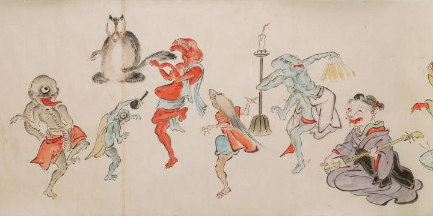

赤子の誕生を祝い踊る化物たち。鼠のような顔をした化物の三味線に合わせて踊る5体の化物。奥では、狸が腹づつみを拍子に合わせて打っている。踊る化物は右から、扇子を持ち瞳が八つ並んで付いている化物。鼬か狐のような獣の顔をした化物。肌が赤く顔が潰れたような化物。小柄な一つ目の化物。三つ目で舌を出し、長い首を自らの股の下にくぐらせた化物が描かれている。
出典：親書誌：U426_nichibunken_0053：化物婚礼絵巻；バケモノコンレイエマキ／日付：2006／資源識別子：U426_nichibunken_0053_0022_0000
Copyright (c)2010- International Research Center for Japanese Studies, Kyoto, Japan. All rights reserved.